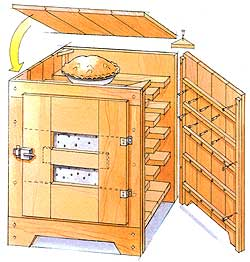
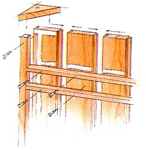
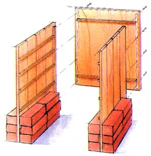
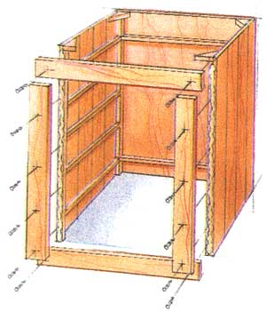
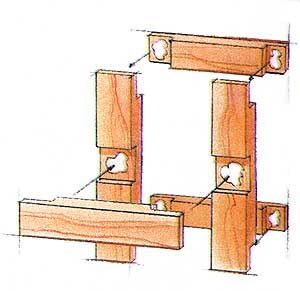
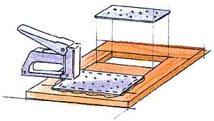

Fresh-baked berry pies were a seasonal rarity on a pioneer homestead, and they needed protection from small children and other varmints. Cook's answer was a pie safe: a cabinet with tight joints and close-fitting doors to exclude pests and retain enough humidity to keep pies moist, but also featuring tiny, ant and gnat excluding perforations in the door so air could circulate to prevent mold.
MOTHERS Pie Safe is 27" high and sized to hold four 9" pies on 22"-square shelves. It is built of tongue-and-groove (T&G) panels that are deck-screwed and epoxy-glued to 1"-square corner posts. Vent screens in the door are made from prick-punched, flattened tin cans.
For each, cut four lengths of 1"x 6" T&G pine to 27". Lay out boards, narrow ends up, best side down, aligned so bottoms of boards lie evenly along a horizontal line, square-to sides of panels.
Lay 30-minute epoxy in grooves. Mate tongues and grooves. Tap joints to secure. When dry, saw, plane or cut the thin T&G millings from outer edges of outer boards. Trim panels to be even and square.
Cut two lengths of 1"-square stock to be 1/2" less than height of sides. Screw and glue even with the outboard edges of panel. Bottoms should be even with bottom of sides (leaving X" at top for top-attachment filets). If using 1"-thick boards for the back, inset rear posts on each panel 1" inside of the rear edge. Leave flush for a thin-plywood back.
Lay glued-up side panels side-by-side. Determine number of shelves and their spacing (6" for bread, 4" for pies and muffins) and mark locations on insides of side panels. So top of bottom shelf will be even with lip of door opening, locate upper edge of bottom cleat 5 1/2" from bottom edge of side boards.
For each shelf cleat, cut a length of 1"-square stock to rest along marked shelf lines, fitting loosely between vertical posts. Pilot-drill three holes in cleats, and select 1", 1 1/4" or 1 1/2" deck screws-whichever will not quite pierce outer surface of panel board. Screw and epoxy-glue cleats to panels.
Make 22" x 27" back from four 27" lengths of T&G (or from plywood if back won't be open to view). Trim millings from outboard edges of T&G of back panel and epoxy joints. Fasten two 20" lengths of 1"-square stock across plank, 3" from top and bottom.
When cabinet face is attached (see next step) fasten back to cabinet with deck screws through countersunk pilot holes into inset vertical posts. (Using plywood, fasten flush.)
Cut from the best-looking T&G: one 22"-long bottom rail, one 22"top rail and rough-cut two 20" vertical stiles. Saw, cut or plane off T&G moldings from 6"-wide bottom rail. Trim T&G milling off one side of top rail and rip the other edge so board is 4" wide. Countersink pilot holes 1" in from edge at each end of rails, one hole for 4"-wide top, two for 6" bottom rail.
Block sides parallel with bricks or blocks, and tack (fasten temporarily) the back panel and both rails in place. Rip two vertical stiles to be 4" wide and trim lengths even to fit snugly between rails on each side of the face frame. Countersink three pilot holes 1" from inside outboard edge at top, bottom and center of each stile and screw and glue in place. Permanently fasten horizontal rails.
Before fastening, you may jigsaw a 2" to 3" high cutout in the lower edge of the bottom board to simulate legs. Repeat in lower edge of back and side panels.
The bottom shelf must be made varmint-tight. Cut enough 6" T&G boards to length (21" more or less) to fill bottom shelf snugly all around. Trim front and rear edges of T&G and as much more as needed to fit. Install shelf boards from back to front, gluing and snugging T&G joints tight as each goes in. Glue outboard edges where bottom shelf rests on cleats.
From scrap pine, cut four 3" x 3" x 4'a' right (90°) triangles. Screw and glue them into the corners over posts. Drill a small pilot hole near long edge of each. Plane or trim tops of filets to be even with top edges of cabinet if needed.
Make a top from glued-seam T&G, from butcher board or other material. Edge overhang should be 1" all around.
Place top on cabinet and fasten through holes in filets. Don't glue, in case you want to change the top some day.
Cut sufficient 21" or so lengths of T&G to fit between opposing shelf cleats. Cut shelf boards short so they are loose and removable. Arrange them close enough together to hold baked goods, but leave a 1/2" or more of space between to permit airflow.
Cut three 17" horizontal rails and two 19" vertical stiles from T&G. Rip to 4"width. Lay out in an open rectangle with third rail as a central crossmember-horizontals over verticals-and mark where boards overlap. Using multiple, parallel, close saw cuts and a chisel, remove half the thickness of boards where they meet. Square parts up, apply plenty of epoxy and weight each joint with a brick.
Open both ends of #2, one-pound coffee cans. With tin snips, split can at welded seam. Trim off weld and both rims. Flatten between two boards.
Punch vent holes smaller than the head of a pin in order to exclude fruit flies. You'll need a sharply pointed "prick-punch," a hammer and a carefully modulated hammer hand. Set tin on a hardwood board and punch holes about X' apart in both directions. After door is finished, place tin, unpainted surface facing out, in epoxy and staple to inside of door openings.
Seal all interior seams with a nontoxic, clear, flexible mastic. Install storm door, draft-proofing gaskets around inside of door frame.
Fill countersinks with plugs or buttons.
Stain or paint exterior as you like. Paint the inside with several coats of white hard-gloss enamel for easy cleaning and to prevent molds from infiltrating the wood.
Attach door with matching offset hinges and latch.
WOOD: #10, 1/2" x 6"x 8' pine tongue-and-groove (T&G) paneling/siding; #5, 5/4 x 5/4" x 8' true-inch-square hardwood baluster stock; (for unseen back, 1/4 " or 3/8" plywood to fit).
HARD GOODS: offset hinges and latch for flush door; fasteners: 1", 1 1/4" and 1 1/2" deck/drywall screws; cement: 30-minute epoxy; mastic: nontoxic, flexible sealer/adhesive; countersink plugs or buttons; finishing materials as required.
Tin snips; combination-blade saw (hand or power); right angle steel and pencil; electric drill/driver; 1/8" pilot-hole countersink/drill bit; block plane or utility knife stapler; bricks or blocks for support/weighting.
|
 ILLUSTRATIONS: JIM SMOLA |
 Assembling Side Panels |
 Attaching Back Panels |
|
 Attaching Back Panels |
 Attaching Door Frame |
 Stapling Punched Tin |